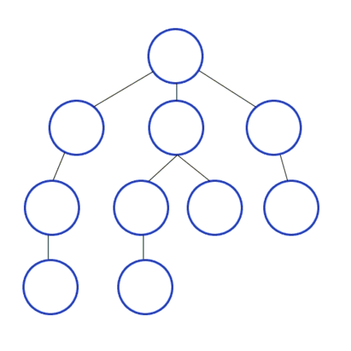

Conceitos a serem discutidos
Agentes de resoluções de problemas
Os agentes inteligentes devem maximizar sua medida de desempenho, esse objetivo é às vezes simplificado se o agente pode adotar um objetivo que deseja satisfazer. A formulação de objetivos, baseada na situação atual e na medida de desempenho do agente, é o primeiro passo para a resolução de problemas.
Considerando que um objetivo é o conjunto de estados do mundo, a tarefa do agente é descobrir como agir para atingir esse objetivo. A formulação de problemas se trata de definir quais ações estados devem ser considerados dado um objetivo.
Se o agente não possui nenhuma informação sobre o ambiente, ele não terá escolha a não ser tentar uma das ações de forma aleátoria, porém caso o agente conheça o ambiente ele pode decidir previamente quais ações serão tomadas em cada etapa do problema para que o objetivo final seja alcançado.
O processo de procurar uma sequência de de ações que alcançam o objetivo é chamado de busca, onde um algoritmo de busca recebe um problema como entrada e devolve uma solução, normalmente uma sequência de ações. Depois que a solução é encontrada as ações recomendadas podem ser executadas, essa é a fase de execução.
Exemplo de problema de mundo simplificado
Um bom exemplo de um problema em mundo simplificado é o do aspirador de pó, ele pode ser formulado como:
Estados: Existem duas células, em cada uma delas pode ou não haver sujeira, e o nosso agente, o aspirador de pó, pode estar em qualquer uma delas.
Estado Inicial: Qualquer uma das células.
Ações: Limpar a célula, se mover para a outra célula.
Modelo de transição: limpar a célula remove a sujeira e se mover para a outra célula desloca o agente para a direção da outra célula.
Objetivo: Verificar se todas as células estão limpas
Custo de ação: Cada passo custa 1
Todos os possíveis estados desse mundo pode ser observado na imagem abaixo:
Algoritmos de busca
Algoritmos de busca exigem uma estrutura de dados para manter o controle da árvore de busca que está sendo construída. Para cada nó n da árvore, temos uma estrutura que contém quatro componentes:
Estado: O estado no espaço ao qual o nó corresponde.
Pai: O nó na árvore de busca que gerou esse nó.
Ação: A ação que foi aplicada ao pai para gerar o nó
Custo do caminho: O custo do nó inicial até o nó final.
Desempenho
O desempenho de um algoritmo pode ser avaliado em 4 aspectos principais:
Completude: O algoritmo oferece a garantia de encontrar uma solução quando ela existir?
Otimização de custo: o algoritmo garante o menor custo entre todas as soluções?
Complexidade de tempo: Quanto tempo ele leva para encontrar uma solução?
Complexidade de espaço: Quanta memória é necessária para executar a busca?
A complexidade de tempo e a complexidade de espaço de memória são sempre consideradas em relação a alguma medida da dificuldade do problema. Em ciência da computação teórica, a medida típica é o tamanho do grafo do espaço de estados, | V | + | E |, onde V é o conjunto de vértices (nós) do grafo e E é o conjunto de arestas (linhas).
Filas e Pilhas
Os algoritmos de busca normalmente são executados utilizando as seguintes estrutura de dados:
fila FIFO: O primeiro elemento a ser inserido na estrutura é o primeiro a ser retirado, normalmente utilizado no algoritmo breadth-first search.
pilha LIFO: O último elemento a ser inserido na estrutura é o primeiro a ser retirado, normalmente utilizado no algoritmo depth-first search, pode ser substituida pela pilha de recursão.
Fila de prioridade: O primeiro elemento a ser retirado é definido por algum tipo de função, em algumas linguagens, como o C++, essa função retorna o menor valor da fila, é utlizada no algoritmo best-first search.
Busca desinformada
Esse tipo de busca ocorre quando o agente não possui nenhum tipo de informação adicional sobre os estados, além daquelas fornecidas na definição do problema. Tudo o que elas podem fazer é gerar sucessores e diferenciar um estado objetivo de um estado não objetivo.
Depth First Search
A Depth First Search (DFS) sempre expande o nó mais profundo na borda atual da árvore de busca, imediatamente até o nível mais profundo da árvore de busca, onde os nós não têm sucessores. À medida que esses nós são expandidos, eles são retirados da borda e, então, a busca “retorna” ao nó seguinte mais profundo que ainda tem sucessores inexplorados.

Exemplo de código em Python:
# Using a Python dictionary to act as an adjacency list
graph = {
'5' : ['3','7'],
'3' : ['2', '4'],
'7' : ['8'],
'2' : [],
'4' : ['8'],
'8' : []
}
visited = set() # Set to keep track of visited nodes of graph.
def dfs(visited, graph, node): #function for dfs
if node not in visited:
print (node)
visited.add(node)
for neighbour in graph[node]:
dfs(visited, graph, neighbour)
# Driver Code
print("Following is the Depth-First Search")
dfs(visited, graph, '5')
Breadth First Search
A Breadth First Search (BFS) é uma estratégia simples em que o nó raiz é expandido primeiro, em seguida todos os sucessores do nó raiz são expandidos, e depois os sucessores desses nós, e assim por diante até que todos os nós tenham sido visitados.

Exemplo de código em Python:
graph = {
'5' : ['3','7'],
'3' : ['2', '4'],
'7' : ['8'],
'2' : [],
'4' : ['8'],
'8' : []
}
visited = [] # List for visited nodes.
queue = [] #Initialize a queue
def bfs(visited, graph, node): #function for BFS
visited.append(node)
queue.append(node)
while queue: # Creating loop to visit each node
m = queue.pop(0)
print (m, end = " ")
for neighbour in graph[m]:
if neighbour not in visited:
visited.append(neighbour)
queue.append(neighbour)
# Driver Code
print("Following is the Breadth-First Search")
bfs(visited, graph, '5') # function calling
Uniform Cost Search
Quando todos os custos de passos forem iguais, a busca em largura será ótima porque sempre expande o nó mais raso não expandido. Através de uma simples extensão, podemos encontrar um algoritmo que é ótimo para qualquer função de custo do passo. Em vez de expandir o nó mais raso, a busca de custo uniforme expande o nó n com o custo de caminho g(n) mais baixo. Isso é feito através do armazenamento da borda como uma fila de prioridade ordenada por g.
Exemplo de código em Python:
# returns the minimum cost in a vector( if
# there are multiple goal states)
def uniform_cost_search(goal, start):
# minimum cost upto
# goal state from starting
global graph,cost
answer = []
# create a priority queue
queue = []
# set the answer vector to max value
for i in range(len(goal)):
answer.append(10**8)
# insert the starting index
queue.append([0, start])
# map to store visited node
visited = {}
# count
count = 0
# while the queue is not empty
while (len(queue) > 0):
# get the top element of the
queue = sorted(queue)
p = queue[-1]
# pop the element
del queue[-1]
# get the original value
p[0] *= -1
# check if the element is part of
# the goal list
if (p[1] in goal):
# get the position
index = goal.index(p[1])
# if a new goal is reached
if (answer[index] == 10**8):
count += 1
# if the cost is less
if (answer[index] > p[0]):
answer[index] = p[0]
# pop the element
del queue[-1]
queue = sorted(queue)
if (count == len(goal)):
return answer
# check for the non visited nodes
# which are adjacent to present node
if (p[1] not in visited):
for i in range(len(graph[p[1]])):
# value is multiplied by -1 so that
# least priority is at the top
queue.append( [(p[0] + cost[(p[1], graph[p[1]][i])])* -1, graph[p[1]][i]])
# mark as visited
visited[p[1]] = 1
return answer
# main function
if __name__ == '__main__':
# create the graph
graph,cost = [[] for i in range(8)],{}
# add edge
graph[0].append(1)
graph[0].append(3)
graph[3].append(1)
graph[3].append(6)
graph[3].append(4)
graph[1].append(6)
graph[4].append(2)
graph[4].append(5)
graph[2].append(1)
graph[5].append(2)
graph[5].append(6)
graph[6].append(4)
# add the cost
cost[(0, 1)] = 2
cost[(0, 3)] = 5
cost[(1, 6)] = 1
cost[(3, 1)] = 5
cost[(3, 6)] = 6
cost[(3, 4)] = 2
cost[(2, 1)] = 4
cost[(4, 2)] = 4
cost[(4, 5)] = 3
cost[(5, 2)] = 6
cost[(5, 6)] = 3
cost[(6, 4)] = 7
# goal state
goal = []
# set the goal
# there can be multiple goal states
goal.append(6)
# get the answer
answer = uniform_cost_search(goal, 0)
# print the answer
print("Minimum cost from 0 to 6 is = ",answer[0])
# This code is contributed by mohit kumar 29
Busca informada
Esta é a estratégia em que utiliza conhecimento de um problema específico além da definição do problema em si, pode encontrar soluções de forma mais eficiente do que uma estratégia de busca desinformada.
Greedy Search
A busca gulosa de melhor escolhaa tenta expandir o nó que está mais próximo do objetivo, com o fundamento de que isso pode conduzir a uma solução rapidamente. Assim, ela avalia os nós usando apenas a função heurística, ou seja, f(n) = h(n). A busca gulosa de melhor escolha em árvore também é incompleta, mesmo em um espaço de estados finito, exatamente como a busca em profundidade.
A* Search
A forma de solução mais amplamente conhecida da busca de melhor escolha é chamada de busca A* (pronuncia-se “busca A estrela”). Ela avalia os nós através da combinação de g(n), o custo para alcançar o nó, e h(n), o custo para ir do nó ao objetivo:
f(n) = g(n) + h(n).
Uma vez que g(n) dá o custo do caminho desde o nó inicial até o nó n e h(n) é o custo estimado do caminho de menor custo de n até o objetivo, teremos
f (n) = custo estimado da solução de menor custo através de n.
Assim, se estamos tentando encontrar a solução de menor custo, algo razoável para tentar emprimeiro lugar, seria o nó com o menor valor de g(n) + h(n). Acontece que essa estratégia é mais do que apenas razoável: desde que a função heurística h(n) satisfaça certas condições, a busca A* será completa e ótima. O algoritmo é idêntico à BUSCA-DE-CUSTO-UNIFORME, exceto que A* usa g + h em vez de g.
Funções Heurísticas
A primeira condição requerida para otimalidade é que h(n) seja uma heurística admissível. Uma heurística admissível é a que nunca superestima o custo de atingir o objetivo. Devido à g(n) ser o custo real para atingir n ao longo do caminho atual, e f(n) = g(n) + h(n), temos como consequência imediata que f(n) nunca irá superestimar o verdadeiro custo de uma solução ao longo do caminho atual através de n.
Algoritmos Genéticos
Um algoritmo genético é uma técnica de busca utilizada na ciência da computação para achar soluções aproximadas em problemas de otimização e busca, fundamentado principalmente pelo americano John Henry Holland. Algoritmos genéticos são uma classe particular de algoritmos evolutivos que usam técnicas inspiradas pela biologia evolutiva como hereditariedade, mutação, seleção natural e recombinação (ou crossing over).
Esses algoritmos são implementados como uma simulação de computador em que uma população de representações abstratas de solução é selecionada em busca de soluções melhores. A evolução geralmente se inicia a partir de um conjunto de soluções criado aleatoriamente e é realizada por meio de gerações. A cada geração, a adaptação de cada solução na população é avaliada, alguns indivíduos são selecionados para a próxima geração, e recombinados ou mutados para formar uma nova população. A nova população então é utilizada como entrada para a próxima iteração do algoritmo.
Referências
RUSSEL, Stuart; NORVIG, Peter. Artificial Intelligence: A modern Approach 3 ed. Elsevier 2009.
Depth First Search in Python (with Code) | DFS Algorithm, FavTutor. Disponível em: https://favtutor.com/blogs/depth-first-search-python, acesso em 31 de jul. de 2022.
Breadth First Search in Python (with Code) | BFS Algorithm, FavTutor. Disponível em: https://favtutor.com/blogs/breadth-first-search-python, acesso em 31 de jul. de 2022.
Uniform-Cost Search (Dijkstra for large Graphs), Geeks For Geeks. Disponível em: https://www.geeksforgeeks.org/uniform-cost-search-dijkstra-for-large-graphs/, acesso em 31 de jul. de 2022.
Algoritmo genético, Wikpedia. Disponível em: https://pt.wikipedia.org/wiki/Algoritmo_genético, acesso em 31 de jul. de 2022.